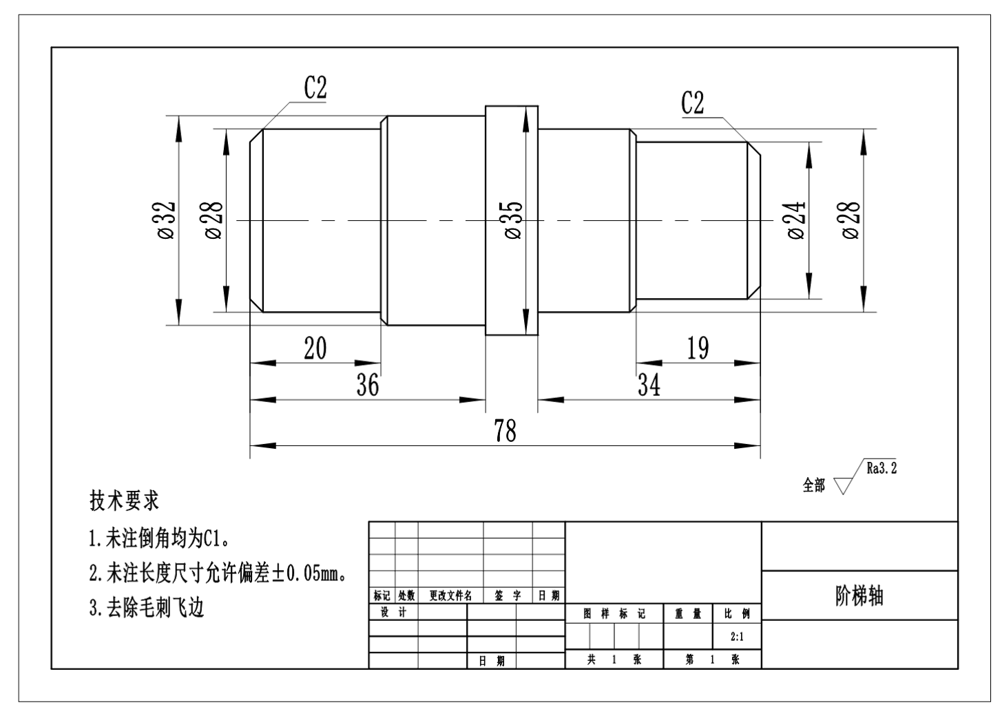

階段軸実習 総合訓練
本実習では、NC旋盤を使用して階段軸の加工を行います。プログラミングから加工まで、一連のプロセスを学びます。
実習内容
- 粗材のサイズはØ36×80です。
- 指定されたサイズの粗材を定義し、クランプしてください。
- 適切な旋削工具を選択し、対刀を完了してください。
- 加工プログラムを編集し、G00およびG01命令を使用して、階段軸の加工を完了してください。
加工図面

プロジェクト
評価表

本実習では、NC旋盤を使用して階段軸の加工を行います。プログラミングから加工まで、一連のプロセスを学びます。